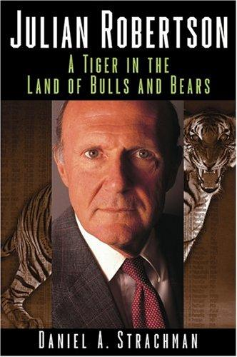

朱利安·罗伯逊（Julian Robertson）四十八岁才创办老虎管理公司。此前他在基德—皮博迪（Kidder, Peabody）工作二十余年，做过股票经纪人，也领导过旗下投资顾问机构Webster Management；1978年离职后，他带着家人在新西兰生活了一年。1980年，罗伯逊与索普·麦肯齐（Thorpe McKenzie）以约八百万美元启动老虎基金，其中约一百五十万美元来自罗伯逊本人。丹尼尔·斯特拉克曼（Daniel A. Strachman）根据对罗伯逊、同事和同行的采访写成本书，Wiley于2004年出版英文版，共288页。中国人民大学出版社2022年推出艾博翻译的中文版《老虎基金朱利安·罗伯逊》，ISBN为978-7-300-30580-6；这是正式中译名，而不是直译的“牛熊之地的猛虎”。英文版出版时罗伯逊已经归还外部资本，但仍在用自己的钱投资并扶持新基金，作者因此能同时回看基金历史和刚形成的人才网络。
老虎基金把深入的公司研究与宏观判断放在同一组合里：多头寻找经营质量高、管理层可靠且价格合理的公司，空头则针对商业模式脆弱、管理层失信或估值过高的企业；货币、债券和大宗商品仓位用于表达对国家与周期的判断。罗伯逊要求分析师拜访公司、供应商和竞争者，再把结论压缩成能够被反驳的投资论点。研究会议不是按资历轮流发言，年轻分析师也要直接为数字和渠道调查负责；罗伯逊最终集中仓位，团队则不断寻找能推翻结论的新事实。按本书及后续资料采用的口径，基金从1980年成立到1998年资产高峰的费后年化回报约31.7%，同期标普500约12.7%，管理规模一度超过220亿美元。这个数字描述的是高峰前的十八年，不应与基金截至2000年清盘的完整收益混用；把最后两年算入后，复合回报会明显下降。
1998年俄罗斯债务危机、日元急升和若干大额仓位给老虎造成重创，赎回随之增加。罗伯逊又拒绝追逐互联网股票，1999年基金亏损而纳斯达克继续上涨。2000年3月，他在关闭基金的信中写道：“There is no point in subjecting our investors to risk in a market which I frankly do not understand.”这句话常被解释为价值投资者在泡沫顶部的胜利宣言，但书中呈现的现实更复杂：方向最终正确，不代表资金能够无限期承受相对落后、仓位波动和客户赎回。多空组合还会同时遭遇两种压力——便宜的多头继续下跌，昂贵的空头继续上涨——净敞口看似受控，个别仓位和融资需求仍可能剧烈扩大。老虎归还外部资本时，科技股泡沫确已接近顶点；基金却没有等到下跌兑现其空头判断，时间和资本结构同样决定了结果。
斯特拉克曼还追踪了“老虎幼崽”的形成。罗伯逊向离职分析师提供种子资金、办公室和研究网络，史蒂芬·曼德尔的Lone Pine、安德烈亚斯·哈尔沃森的Viking、李·安斯利的Maverick和蔡斯·科尔曼的Tiger Global都由这套关系生长出来。共同的履历不等于统一策略：有人保持长短仓选股，有人转向科技或更广泛的全球资产。本书出版于2004年，不能用后来个别门徒的成功或失败倒推作者当时已经预见一切。它最有用的材料是基金如何招人、研究、配置多空仓位以及处理最后两年的压力；局限则是叙述明显接近传主视角，历史业绩也不是可逐笔重建的审计档案。读者应把31.7%的高峰前纪录、2000年的退出和人才网络分开评价，而不是合并成一个没有代价的传奇。